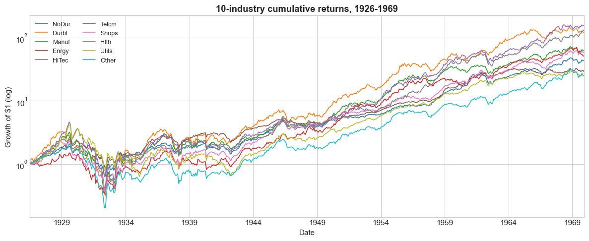

What Is Alpha? — The 1970 Trading Strategy Challenge#
🎯 Learning Objectives#
By the end of this notebook, you will be able to:
Design an industry allocation under genuine information constraints — no peeking at the future
Run an alpha test against the CAPM, against an equal-weight benchmark, and against the FF3 model
Interpret alpha geometrically as frontier expansion — does your strategy add anything to the benchmark’s opportunity set?
Recognize when “alpha” is sector beta in disguise — the same return looks like alpha against the wrong benchmark and zero against the right one
Argue for a benchmark — when you claim alpha, against what?
📋 Table of Contents#
🛠️ Setup #
#@title Setup
import numpy as np
import pandas as pd
import matplotlib.pyplot as plt
import statsmodels.api as sm
%matplotlib inline
plt.style.use('seaborn-v0_8-whitegrid')
plt.rcParams['figure.figsize'] = [11, 5]
plt.rcParams['font.size'] = 11
import warnings; warnings.filterwarnings('ignore')
from pandas_datareader.data import DataReader
print("✅ Libraries loaded")
✅ Libraries loaded
#@title Load 10-Industry portfolio data
ind = DataReader('10_Industry_Portfolios', 'famafrench', start='1926-01-01', end='1969-12-31')[0] / 100
ind.index = pd.to_datetime(ind.index.to_timestamp()) + pd.offsets.MonthEnd(0)
ind.columns = [c.strip() for c in ind.columns]
ff = DataReader('F-F_Research_Data_Factors', 'famafrench', start='1926-01-01', end='1969-12-31')[0] / 100
ff.index = pd.to_datetime(ff.index.to_timestamp()) + pd.offsets.MonthEnd(0)
print(f"Industry data: {ind.index.min().date()} to {ind.index.max().date()}")
print(f"Industries: {list(ind.columns)}")
# Merge and export
merged = ind.join(ff, how='inner')
merged.to_csv('industryportfolios1970.csv')
print(f"Exported merged data: {merged.shape[0]} rows x {merged.shape[1]} cols")
print(f"Date range: {merged.index.min().date()} to {merged.index.max().date()}")
Industry data: 1926-07-31 to 1969-12-31
Industries: ['NoDur', 'Durbl', 'Manuf', 'Enrgy', 'HiTec', 'Telcm', 'Shops', 'Hlth', 'Utils', 'Other']
Pre-1970: The World as You Know It #
It is January 1, 1970. You manage $1M. You will hold a portfolio of 10 US industries for one year (1970) with no rebalancing. You can use any information available as of late 1969. You CANNOT look at stock-market return data after Dec 1969.
A summary of the world up to 1969#
The 1960s in broad strokes:
Post-war US expansion; strong growth most of the decade
Vietnam War escalated through the late ’60s; heavy government spending
“Nifty Fifty” — large-cap growth stocks (Polaroid, Avon, Disney, Xerox, IBM, Coca-Cola) traded at very high P/E multiples on the thesis that they would compound forever. By late 1969, many at 40-80× earnings.
Macroeconomic state, late 1969:
Inflation: ~6% and rising (vs ~1% in early 1960s). Inflation expectations getting unanchored.
Federal Funds rate: ~9% (Fed Chair Martin tightening aggressively in 1969).
Recession indicator: NBER will later date a US recession beginning Dec 1969 (you don’t know this yet, but housing starts and industrial production are weakening).
Bretton Woods: USD officially convertible to gold at $35/oz, but US gold reserves declining. Foreign central banks quietly converting dollars.
Oil: OPEC exists (founded 1960) but is largely powerless. Oil is ~$3/barrel. US imports ~22% of its oil.
Treasury yields: 10-year ~7.7%, 3-month ~7.7% (curve roughly flat).
What “smart money” was worried about in 1969:
Inflation eating margins
Whether the Fed could engineer a soft landing
Vietnam cost
Bretton Woods sustainability
Excessive speculation in Nifty Fifty growth names
You can research further on FRED, in news archives, etc. — anything public — as long as you stick to information available at year-end 1969.
The 10 Industries #
Ken French groups all US-listed stocks into 10 industry portfolios. Value-weighted within each industry.
Code |
Industry |
What’s in it (1970) |
|---|---|---|
|
Consumer Non-Durables |
Food, beverages, tobacco, household, apparel |
|
Consumer Durables |
Cars, TVs, furniture, appliances |
|
Manufacturing |
Machinery, trucks, planes, business equipment |
|
Energy |
Oil, gas, coal extraction & refining (Exxon, Texaco, Gulf, etc.) |
|
Hi-Tech |
Mainframes (IBM, Burroughs), defense electronics |
|
Telecom |
Dominated by AT&T (Bell System monopoly) |
|
Shops |
Wholesale, retail, eating places |
|
Health |
Healthcare, medical equipment, pharma |
|
Utilities |
Electric, gas, water |
|
Other |
Construction, transport, finance, services, mining (incl. gold) |
Industry Performance Through 1969 #
You can study how these industries performed 1926-1969 — long enough to form a view of their “normal” Sharpe and correlation structure.
# Industry summary through 1969 (annualized)
ind_pre = ind.loc[:'1969'].copy()
summary_pre = pd.DataFrame({
'Mean ann': ind_pre.mean() * 12,
'Vol ann': ind_pre.std() * np.sqrt(12),
'Sharpe': (ind_pre.mean() * 12) / (ind_pre.std() * np.sqrt(12)),
})
summary_pre.round(3)
| Mean ann | Vol ann | Sharpe | |
|---|---|---|---|
| NoDur | 0.101 | 0.169 | 0.596 |
| Durbl | 0.155 | 0.308 | 0.505 |
| Manuf | 0.127 | 0.256 | 0.494 |
| Enrgy | 0.116 | 0.228 | 0.509 |
| HiTec | 0.153 | 0.273 | 0.562 |
| Telcm | 0.089 | 0.153 | 0.581 |
| Shops | 0.118 | 0.222 | 0.532 |
| Hlth | 0.136 | 0.216 | 0.630 |
| Utils | 0.102 | 0.234 | 0.434 |
| Other | 0.106 | 0.259 | 0.410 |
# Cumulative growth 1926-1969 (log scale)
fig, ax = plt.subplots(figsize=(12, 5))
(1 + ind_pre).cumprod().plot(ax=ax, linewidth=1.2)
ax.set_yscale('log')
ax.set_ylabel('Growth of $1 (log)')
ax.set_title('10-industry cumulative returns, 1926-1969', fontweight='bold')
ax.legend(loc='upper left', fontsize=9, ncol=2)
plt.tight_layout(); plt.show()

🤔 Think before you commit
Which industries had the highest historical Sharpe?
Which were most defensive in past recessions (1930, 1937-38, 1957-58, 1962)?
But: how relevant is 1926-1969 history for 1970? The world in 1970 had specific risks (inflation, Bretton Woods strain) that prior decades didn’t fully expose.
Your weights should reflect both.
🛡️ Pitfall Checklist #
Pitfall |
How it could bite you |
|
|---|---|---|
1 |
Hindsight bias |
You know what happened later. Resist tilting toward what worked next. |
2 |
Mistaking sector beta for alpha |
A 60% energy weight that pays off looks like alpha. It’s energy beta. |
3 |
Concentrated bets |
If your “alpha” is just one industry, you have no alpha — you have an industry. |
4 |
Ignoring drawdown |
A strategy can earn a great return on paper and still be unholdable. |
5 |
No hypothesis |
“I picked these because they felt right” is hard to evaluate. State a thesis. |
🤖 AI-Era Insight
AI can summarize 1970 history in 30 seconds — but it knows what happened. If you ask “what was the best industry to be in starting 1970,” the LLM will tell you “energy” because it knows the oil shock. That is cheating. Constrain yourself to information available as of late 1969.
🎯 Your Strategy: Pick Weights for 1970 #
Allocate across the 10 industries. Weights sum to 1.0 (long-only, no leverage). Hold for all of 1970 with no rebalancing.
In the cell below, replace each ____ with your chosen weight. Then write a
one-sentence rationale explaining your thesis.
# === YOUR 1970 ALLOCATION ===
weights_1970 = {
'NoDur': ____, # Consumer non-durables
'Durbl': ____, # Consumer durables
'Manuf': ____, # Manufacturing
'Enrgy': ____, # Energy
'HiTec': ____, # Hi-Tech
'Telcm': ____, # Telecom
'Shops': ____, # Shops
'Hlth': ____, # Health
'Utils': ____, # Utilities
'Other': ____, # Other
}
rationale_1970 = "One sentence on why these weights, given what you knew at end of 1969."
# Validate
total = sum(weights_1970.values())
print(f"Weight sum: {total:.3f} {'✅' if abs(total - 1) < 0.001 else '❌ should sum to 1.0'}")
print(f"Rationale: {rationale_1970}")
What Is Alpha? #
Before we reveal what happened in 1970, let’s understand what we’re going to test. Alpha has a precise meaning that’s easy to get wrong.
The alpha test#
Given a candidate strategy with excess returns \(r^e_t\):
Subtract the risk-free rate from raw returns
Choose a factor model (a benchmark — e.g., the market portfolio)
Regress: \(r^e_t = \alpha + \beta \cdot f_t + \epsilon_t\)
Test whether \(\alpha\) is different from zero
The test asset is on the left of the regression. The factor (the proposed “tangency portfolio”) is on the right.
💡 The crucial interpretation
A non-zero alpha does NOT mean you prefer the test asset over the factor. It means you can improve by combining both — the alpha test asks whether the factor is the tangency portfolio with respect to the expanded opportunity set that includes the test asset.
Three benchmarks, three alphas#
The same strategy can have very different alphas depending on what’s on the right:
Benchmark |
Equation |
What it tests |
|---|---|---|
CAPM |
\(r^e = \alpha + \beta \cdot MKT\) |
“Is the market tangency portfolio?” |
Equal-weight industries |
\(r^e = \alpha + \beta \cdot EW\) |
“Is the equal weighted portfolio tangency portfolio?” |
FF3 |
\(r^e = \alpha + \beta_M MKT + \beta_S SMB + \beta_H HML\) |
“Is a portfolio of fixed weights on the portfolios MKT, SMB, and HML tangency portfolio?” |
Geometric interpretation: frontier expansion#
If alpha > 0 against benchmark \(B\):
Add a small position in your strategy to the benchmark portfolio
The resulting combined portfolio has a higher Sharpe than \(B\) alone
The mean-variance frontier expands when you include your strategy
This is a in sample statement
If alpha = 0:
Your strategy is on the frontier defined by \(B\)
Adding your strategy doesn’t expand the opportunity set
The benchmark \(B\) already contains everything your strategy offers
Mean you can achieve the same expected return with at least as little risk by simply leveraging up the factors on the right
Meaning you cannot get a higher Sharpe Ratio then investing in the factor by investing in the test asset.
Is the Market special?#
We can run this test with any candidate factor on the right
For example, you can use your own portfolio to figure out if the test asset can expand on your current investment
Why the Market is often used because:
it is empirically very though to beat
You can invest at scale–so it is a scalable benchmark–what that means?
market clearing logic suggests that it must be close to tangency
CAPM says market is THE tangency portfolio (can you explain why?)
CAPM says you cannot find an asset with true alpha relative to the market
In any particular sample there will be many assets with higher SR
The Big Question: What is the right benchmark?#
🔒 Reveal: 1970 Results #
RUN THE CELL BELOW ONLY WHEN INSTRUCTOR SAYS GO#
# === REVEAL: 1970 industry returns ===
mkt_total_monthly_1970 = ff.loc['1970', 'Mkt-RF'] + ff.loc['1970', 'RF']
rf_monthly_1970 = ff.loc['1970', 'RF']
ind_monthly_1970 = ind.loc['1970']
# Annual returns by industry
ret_1970_annual = (1 + ind_monthly_1970).prod() - 1
mkt_1970_annual = (1 + mkt_total_monthly_1970).prod() - 1
rf_1970_annual = (1 + rf_monthly_1970).prod() - 1
print("=== 1970 industry annual total returns ===")
print(ret_1970_annual.round(3).sort_values(ascending=False))
print(f"\nMarket total return 1970: {mkt_1970_annual:.2%}")
print(f"Risk-free total 1970: {rf_1970_annual:.2%}")
# YOUR portfolio's monthly returns
w = pd.Series(weights_1970)
port_monthly_1970 = (ind_monthly_1970 * w).sum(axis=1)
port_annual_1970 = (1 + port_monthly_1970).prod() - 1
# Equal-weight 1/10 portfolio for comparison
eq_monthly_1970 = ind_monthly_1970.mean(axis=1)
eq_annual_1970 = (1 + eq_monthly_1970).prod() - 1
print(f"\n→ YOUR portfolio's 1970 return: {port_annual_1970:.2%}")
print(f" vs equal-weight 1/10 industries: {eq_annual_1970:.2%}")
print(f" vs market (value-weighted): {mkt_1970_annual:.2%}")
---------------------------------------------------------------------------
KeyError Traceback (most recent call last)
File /opt/anaconda3/lib/python3.13/site-packages/pandas/core/indexes/datetimes.py:610, in DatetimeIndex.get_loc(self, key)
609 try:
--> 610 return self._partial_date_slice(reso, parsed)
611 except KeyError as err:
File /opt/anaconda3/lib/python3.13/site-packages/pandas/core/indexes/datetimelike.py:333, in DatetimeIndexOpsMixin._partial_date_slice(self, reso, parsed)
329 if len(self) and (
330 (t1 < self[0] and t2 < self[0]) or (t1 > self[-1] and t2 > self[-1])
331 ):
332 # we are out of range
--> 333 raise KeyError
335 # TODO: does this depend on being monotonic _increasing_?
336
337 # a monotonic (sorted) series can be sliced
KeyError:
The above exception was the direct cause of the following exception:
KeyError Traceback (most recent call last)
Cell In[7], line 2
1 # === REVEAL: 1970 industry returns ===
----> 2 mkt_total_monthly_1970 = ff.loc['1970', 'Mkt-RF'] + ff.loc['1970', 'RF']
3 rf_monthly_1970 = ff.loc['1970', 'RF']
4 ind_monthly_1970 = ind.loc['1970']
File /opt/anaconda3/lib/python3.13/site-packages/pandas/core/indexing.py:1184, in _LocationIndexer.__getitem__(self, key)
1182 if self._is_scalar_access(key):
1183 return self.obj._get_value(*key, takeable=self._takeable)
-> 1184 return self._getitem_tuple(key)
1185 else:
1186 # we by definition only have the 0th axis
1187 axis = self.axis or 0
File /opt/anaconda3/lib/python3.13/site-packages/pandas/core/indexing.py:1368, in _LocIndexer._getitem_tuple(self, tup)
1366 with suppress(IndexingError):
1367 tup = self._expand_ellipsis(tup)
-> 1368 return self._getitem_lowerdim(tup)
1370 # no multi-index, so validate all of the indexers
1371 tup = self._validate_tuple_indexer(tup)
File /opt/anaconda3/lib/python3.13/site-packages/pandas/core/indexing.py:1065, in _LocationIndexer._getitem_lowerdim(self, tup)
1061 for i, key in enumerate(tup):
1062 if is_label_like(key):
1063 # We don't need to check for tuples here because those are
1064 # caught by the _is_nested_tuple_indexer check above.
-> 1065 section = self._getitem_axis(key, axis=i)
1067 # We should never have a scalar section here, because
1068 # _getitem_lowerdim is only called after a check for
1069 # is_scalar_access, which that would be.
1070 if section.ndim == self.ndim:
1071 # we're in the middle of slicing through a MultiIndex
1072 # revise the key wrt to `section` by inserting an _NS
File /opt/anaconda3/lib/python3.13/site-packages/pandas/core/indexing.py:1431, in _LocIndexer._getitem_axis(self, key, axis)
1429 # fall thru to straight lookup
1430 self._validate_key(key, axis)
-> 1431 return self._get_label(key, axis=axis)
File /opt/anaconda3/lib/python3.13/site-packages/pandas/core/indexing.py:1381, in _LocIndexer._get_label(self, label, axis)
1379 def _get_label(self, label, axis: AxisInt):
1380 # GH#5567 this will fail if the label is not present in the axis.
-> 1381 return self.obj.xs(label, axis=axis)
File /opt/anaconda3/lib/python3.13/site-packages/pandas/core/generic.py:4301, in NDFrame.xs(self, key, axis, level, drop_level)
4299 new_index = index[loc]
4300 else:
-> 4301 loc = index.get_loc(key)
4303 if isinstance(loc, np.ndarray):
4304 if loc.dtype == np.bool_:
File /opt/anaconda3/lib/python3.13/site-packages/pandas/core/indexes/datetimes.py:612, in DatetimeIndex.get_loc(self, key)
610 return self._partial_date_slice(reso, parsed)
611 except KeyError as err:
--> 612 raise KeyError(key) from err
614 key = parsed
616 elif isinstance(key, dt.timedelta):
617 # GH#20464
KeyError: '1970'
Alpha Regressions vs Three Benchmarks #
We have 12 monthly observations. That’s a small sample — standard errors will be large. But the interpretation of alpha doesn’t depend on the sample size.
# Strategy excess returns (monthly)
port_excess_1970 = port_monthly_1970 - rf_monthly_1970
# ─── Benchmark 1: CAPM ─────────────────────────────────────────────
mkt_excess_1970 = ff.loc['1970', 'Mkt-RF']
X = sm.add_constant(mkt_excess_1970)
m_capm = sm.OLS(port_excess_1970, X).fit()
# ─── Benchmark 2: Equal-weight industries ──────────────────────────
eq_excess_1970 = eq_monthly_1970 - rf_monthly_1970
X = sm.add_constant(eq_excess_1970)
m_eq = sm.OLS(port_excess_1970, X).fit()
# ─── Benchmark 3: FF3 (Mkt + SMB + HML) ────────────────────────────
ff3_full = DataReader('F-F_Research_Data_Factors', 'famafrench', start='1970-01-01')[0] / 100
ff3_full.index = pd.to_datetime(ff3_full.index.to_timestamp()) + pd.offsets.MonthEnd(0)
ff3 = ff3_full.loc['1970', ['Mkt-RF', 'SMB', 'HML']]
X = sm.add_constant(ff3)
m_ff3 = sm.OLS(port_excess_1970, X).fit()
alpha_table = pd.DataFrame({
'Annualized alpha': [m_capm.params['const']*12, m_eq.params['const']*12, m_ff3.params['const']*12],
't-stat (alpha)': [m_capm.tvalues['const'], m_eq.tvalues['const'], m_ff3.tvalues['const']],
'R² (in-sample)': [m_capm.rsquared, m_eq.rsquared, m_ff3.rsquared],
}, index=['vs CAPM (Mkt)', 'vs Equal-Weight Industries', 'vs FF3 (Mkt+SMB+HML)'])
print(alpha_table.round(3))
💡 What does this tell you?
Which alpha is largest? That benchmark is the easiest to beat.
Which alpha is smallest? That benchmark “absorbs” more of your return as factor exposure.
Are any t-stats > 2? Probably not — 12 monthly observations isn’t enough to nail down alpha. But the point estimates still tell us about frontier expansion.
⚠️ Caution: t-stats with 12 observations
Standard errors scale as \(1/\sqrt{T}\). With T=12 they’re roughly 5× wider than with T=300 (25 years). Use the t-stat as a “is this even close to real?” filter, but don’t expect statistical significance from one year of data.
Frontier Expansion: The Geometric Picture #
Plot the market and your strategy as two points in (vol, excess-return) space. Then trace out all the convex combinations — that’s the frontier you could have spanned with these two assets.
# Annualized first moments from the 1970 sample
mu_mkt = mkt_excess_1970.mean() * 12
sig_mkt = mkt_excess_1970.std() * np.sqrt(12)
mu_str = port_excess_1970.mean() * 12
sig_str = port_excess_1970.std() * np.sqrt(12)
cov_ms = mkt_excess_1970.cov(port_excess_1970) * 12
sr_mkt = mu_mkt / sig_mkt
sr_str = mu_str / sig_str
# Trace the mean-variance frontier spanned by mkt + your strategy
# w in strategy, (1-w) in market — keep range sensible (no extreme leverage)
w_grid = np.linspace(-1.0, 2.0, 200)
front_mu, front_vol = [], []
for w in w_grid:
mu_p = w * mu_str + (1 - w) * mu_mkt
var_p = w**2 * sig_str**2 + (1-w)**2 * sig_mkt**2 + 2 * w * (1-w) * cov_ms
front_mu.append(mu_p); front_vol.append(np.sqrt(var_p))
# Best Sharpe achievable in this 2-asset universe over the grid
sharpes = [m / s if s > 0 else -np.inf for m, s in zip(front_mu, front_vol)]
best_idx = int(np.argmax(sharpes))
sr_best = sharpes[best_idx]
w_best = w_grid[best_idx]
# Plot — focus on the qualitative question, not unstable tangent weights
fig, ax = plt.subplots(figsize=(10, 6))
ax.plot(front_vol, front_mu, '-', color='steelblue', linewidth=2,
label='Combination frontier (Mkt + your strategy)')
ax.scatter([sig_mkt], [mu_mkt], s=140, color='black', zorder=5,
label=f'Market (SR={sr_mkt:.2f})')
ax.scatter([sig_str], [mu_str], s=140, color='orange', zorder=5,
label=f'Your strategy (SR={sr_str:.2f})')
# Capital allocation lines from origin
x_max = max(front_vol) * 1.05
ax.plot([0, x_max], [0, sr_mkt * x_max], '--', color='black', alpha=0.4,
label=f'CAL through market (slope = {sr_mkt:.2f})')
ax.plot([0, x_max], [0, sr_best * x_max], '--', color='red', alpha=0.7,
label=f'CAL through best combo on grid (slope = {sr_best:.2f})')
ax.axhline(0, color='gray', lw=0.5)
ax.set_xlim(0, x_max); ax.set_xlabel('Annualized excess-return volatility')
ax.set_ylabel('Annualized excess return')
ax.set_title('Frontier expansion: does adding your strategy raise the Sharpe?',
fontweight='bold')
ax.legend(loc='best')
plt.tight_layout(); plt.show()
print(f"Market Sharpe alone: {sr_mkt:+.2f}")
print(f"Strategy Sharpe alone: {sr_str:+.2f}")
print(f"Best Sharpe via combination (over grid): {sr_best:+.2f}")
print(f" at allocation: {w_best:.2f} in strategy, {1-w_best:.2f} in market")
print(f"\nFrontier expansion? {'YES' if sr_best > sr_mkt + 0.01 else 'NO (or marginal)'}")
💡 Reading the picture
The black dot is the market — a point in (vol, return) space.
The orange dot is your strategy — another point.
The blue curve traces every combination of the two — short the market and lever your strategy on one end, or short your strategy and lever the market on the other.
The red star is the tangent combination: the mix with the highest Sharpe.
The dashed red line is the Capital Allocation Line through the tangent combo. The dashed black line is the CAL through the market alone.
The two CALs have different slopes. The slope = Sharpe ratio.
If the red CAL is steeper than the black CAL → your strategy expands the frontier. The tangent combo dominates the market alone.
If the red CAL is equal to the black CAL → your strategy adds nothing.
If the red CAL is below the black CAL on the long side → your strategy actively hurts (the tangent combo would short you).
This is exactly what the alpha test measures. A non-zero alpha against the market is the same as saying the red CAL is steeper than the black CAL.
🎯 The Memo #
Write a memo (max 5 sentences) to your CIO. Answer:
Did your strategy beat the market in 1970? By how much?
What was your alpha against each of the three benchmarks? Which is the biggest? Smallest?
Does your strategy expand the frontier vs the market? (Yes if SR of tangent > SR of market.)
If your alpha shrinks dramatically going from CAPM → FF3, what does that tell you about WHERE your return came from?
What’s the honest answer: did you have skill, or did you bet on a sector that happened to do well?
MEMO = """
Write your 5-sentence-max memo here. Keep the triple quotes.
"""
print(MEMO)
📤 Submission #
# === 📤 SUBMISSION CELL ===
import json, base64, hashlib, datetime as dt
required_numeric = [
"port_annual_1970", "mkt_1970_annual", "eq_annual_1970",
"sr_mkt", "sr_str", "sr_best",
]
required_other = ["weights_1970", "MEMO"]
missing = [v for v in (required_numeric + required_other) if v not in dir()]
if missing: raise NameError(f"\n❌ Missing: {missing}")
# Extract alphas + t-stats from the regression objects
alpha_capm_ann = m_capm.params['const'] * 12
alpha_eqwt_ann = m_eq.params['const'] * 12
alpha_ff3_ann = m_ff3.params['const'] * 12
tstat_alpha_capm = m_capm.tvalues['const']
tstat_alpha_ff3 = m_ff3.tvalues['const']
if abs(sum(weights_1970.values()) - 1.0) > 0.01:
raise ValueError(f"❌ Weights don't sum to 1 (got {sum(weights_1970.values()):.3f})")
payload = {
"assignment": "WhatIsAlpha_AI",
"ts": dt.datetime.utcnow().isoformat(timespec="seconds") + "Z",
"answers": {
"port_annual_1970": float(port_annual_1970),
"mkt_1970_annual": float(mkt_1970_annual),
"eq_annual_1970": float(eq_annual_1970),
"alpha_capm_ann": float(alpha_capm_ann),
"alpha_eqwt_ann": float(alpha_eqwt_ann),
"alpha_ff3_ann": float(alpha_ff3_ann),
"tstat_alpha_capm": float(tstat_alpha_capm),
"tstat_alpha_ff3": float(tstat_alpha_ff3),
"sr_mkt": float(sr_mkt),
"sr_str": float(sr_str),
"sr_best": float(sr_best),
},
"weights": dict(weights_1970),
"rationale": rationale_1970,
"memo": MEMO.strip(),
}
blob = json.dumps(payload, sort_keys=True, default=float)
checksum = hashlib.sha256(blob.encode()).hexdigest()[:8]
token = f"UG54::{checksum}::{base64.b64encode(blob.encode()).decode()}"
print("=" * 72)
print("📋 COPY THE LINE BELOW AND PASTE INTO THE SUBMISSION FORM")
print("=" * 72)
print(token)
print("=" * 72)
print(f"\nLength: {len(token)} chars")
🧠 Key Takeaways #
Alpha is always relative to a benchmark. The same returns produce different alphas depending on what’s on the right of the regression.
The alpha test asks: is the factor portfolio the tangent portfolio? A non-zero alpha means you can combine the asset with the factor to get a higher Sharpe than the factor alone — the frontier expands.
Geometric picture: alpha > 0 ⇔ the tangent CAL is steeper than the benchmark CAL ⇔ you can beat the benchmark Sharpe by mixing.
Alpha shrinks as the benchmark gets harder. CAPM alpha → equal-weight alpha → FF3 alpha. If your alpha disappears at FF3, your “skill” was a factor tilt.
A single year is too short for statistical significance. Even a large point-estimate alpha will have a wide confidence interval. The interpretation of alpha is independent of sample size; the certainty is not.
AI knows what happened next. Asking an LLM “what was the best industry for 1970” is cheating. Constrain your prompts to information available at the decision date.
Coming up in Performance Evaluation (Week 9): we’ll formalize this — how to choose the right factor model, how to test alpha statistically, and how to recognize when “alpha” is just a re-labeled factor exposure.